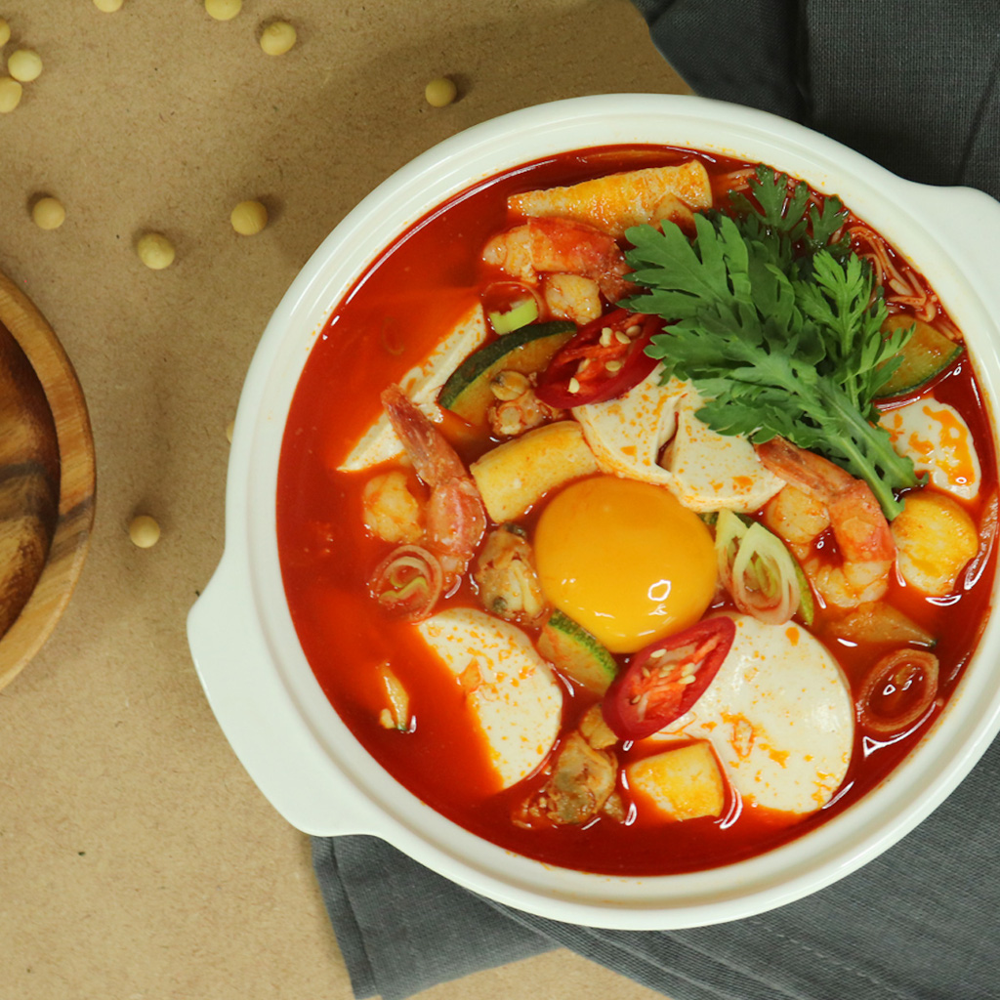

✨️ Sundubu-jjigae ✨️

Soft Tofu Stew
순두부찌개
Ingredients
1 teaspoon vegetable oil
1 teaspoon Korean chile powder
2 tablespoons ground beef
1 tablespoon
doenjang
1 cup water
1 (12 ounce) package Korean soon tofu, drained and sliced
1 egg
1 teaspoon sesame seeds
1 green onion, chopped
salt and pepper to taste
Steps
Heat the vegetable oil in a large saucepan over medium heat. Stir in the Korean chile powder and ground beef. Cook and stir until the beef is crumbly, evenly browned, and no longer pink. Stir in the soy bean paste, coating the beef. Pour in the water and bring to a boil. Season with salt and pepper. Gently drop tofu into the soup and continue cooking until the tofu is heated through, 1 to 2 minutes. Remove from heat and quickly add the egg into the soup, stirring gently to break it up. Garnish with sesame seeds and green onion.